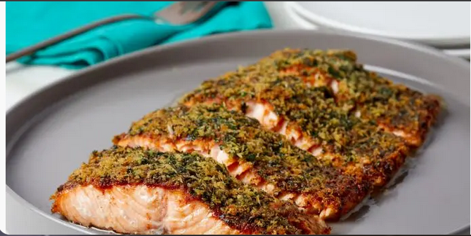

Salmon Recipe!

Description
This is the salmon recipe our fans (and staffers!) turn to again and again. It's easy enough for a weeknight, but boasts smartly seasoned layers of flavor.
Ingredients
- 2 tablespoons light brown sugar
- 1/2 teaspoon paprika
- 1/2 teaspoon garlic powder
- 1/4 teaspoon cayenne pepper
- Kosher salt and freshly ground black pepper
- 1/4 cup panko breadcrumbs
- 1/2 cup parsley leaves, chopped
- 2 tablespoons unsalted butter, melted
- 1 1/2 pounds skin-on salmon fillet, preferably center-cut
- 1 tablespoon Dijon
Directions
- Preheat the oven to 425 degrees F. Line a baking sheet with foil. Mix the brown sugar, paprika, garlic powder, cayenne pepper, 1 teaspoon kosher salt and a generous amount of freshly ground black pepper in a small bowl. Mix the panko with the parsley, butter, 1/4 teaspoon kosher salt and a few grinds of black pepper in another small bowl.
- Place the salmon skin-side down on the prepared baking sheet and spread the surface with the Dijon. Press the brown sugar mixture all over the salmon then top with the breadcrumb mixture. Crimp all four sides of the foil to create a border around the salmon, this will help collect the juices so they don't spread and burn. Bake until the breadcrumbs are golden brown, and the salmon is firm and flakes easily when pressed, 15 to 18 minutes. Cut into four equal portions for serving.
Home